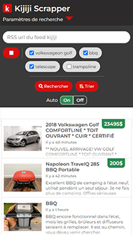

Agrégateur d'annonces Kijiji
- HTML
- CSS
- Javascript
- jQuery
- PHP
- React
- Vue.js


Je developpe et intègre des interfaces pour des sites et application web. Mon rôle est de créer une expérience utilisateur irréprochable en livrant des produits accessibles.
Après avoir gradué en multimédia en 2010, mon chemin s'est orienté dans le développement web front-end. J'ai travaillé sur un grands types de projets web; site webs grand publique, applications internes d'entreprise, infolettres, intranets.